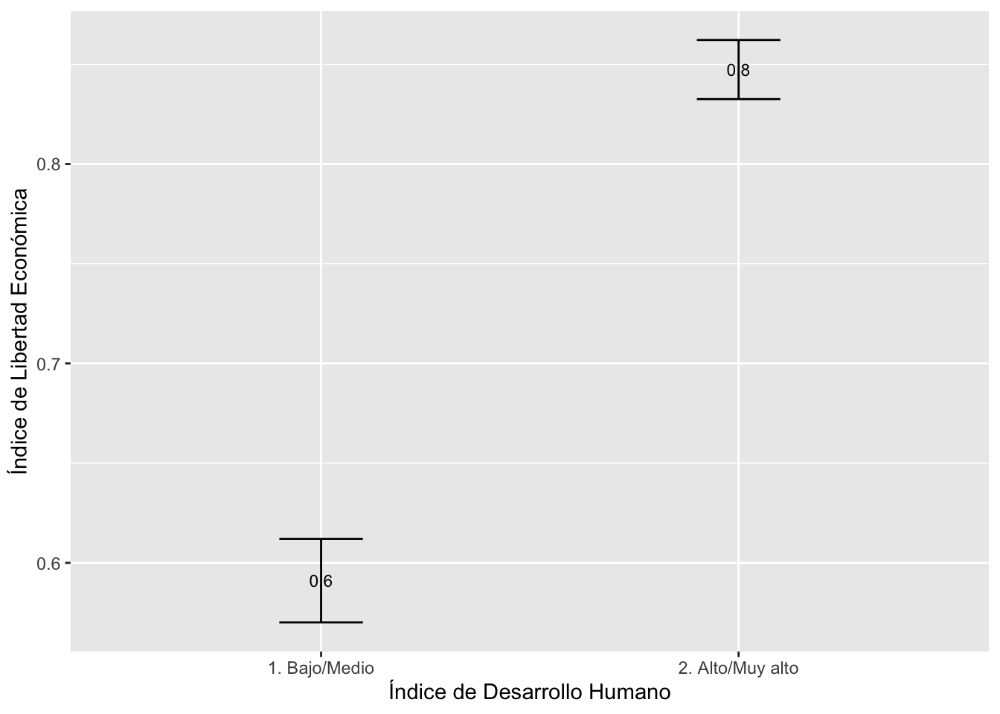

Práctica dirigida 5
Revisemos lo avanzado sobre estadística inferencial
En esta sesión repasaremos lo revisado hasta el momento sobre estadística inferencial: intervalos de confianza, prueba T y revisamos comparación de proporciones.
La base a usar en esta sesión (“data-paises.xlsx”) proviene de la unión de tres bases de datos distintas, estas son “Human Development Index” elaborada por UNDP (https://hdr.undp.org/data-center/documentation-and-downloads),); “Index of Economic Freedom” realizada por Heritage Foundation (https://indexdotnet.azurewebsites.net/index/explore)) y “Fragile State Index” elaborada por The Fund For Peace (https://fragilestatesindex.org/global-data/)..) Asimismo, los datos con los que trabajaremos corresponden a información del 2021 y la unidad de análisis son países.
Sobre las bases de estudio:
El Human Development Index mide el índice de desarrollo humano a través de 3 aspectos: esperanza de vida, educación e ingresos per cápita. Su escala es de 0 a 1.
El Index of Economic Freedom mide el grado de libertad económica mediante 12 indicadores agrupados en 4 categorías: Estado de Derecho, tamaño de Gobierno, eficiencia regulatoria y apertura de mercados.
El Fragile State Index mide la fragilidad de un Estado a través de 12 indicadores agrupados en 4 categorías: cohesión, economía, política y social. Su escala es de 0 a 120.
#Llamemos al paquete
library(rio)
data=import("data-paises.xlsx")
#Llamemos a nuestra base de datosPrueba T
Recuerda que hay condiciones para poder realizar la prueba T:
Independencia: Las muestras deben ser independientes. El muestreo debe ser aleatorio.
Igualdad de varianza: La varianza de ambas poblaciones comparadas debe ser igual. (Prueba Levene)
La variable numérica se distribuye de manera normal.
Pasos para realizar la Prueba T
- Establecer hipótesis
- Calcular el estadístico (parámetro estimado) que se va a emplear
- Determinar el nivel de significancia α (alpha)
- Calcular el p-value y realizar la prueba t.test
- Interpretar
Apliquemos lo revisado…
Primero, exploraremos un poco las variables de interés:
V27: Índice de desarrollo humano V1: Índice de libertad económica
Ambas variables son numéricas, inicialmente. Sin embargo para la prueba T es necesario contar con una variable numérica y otra categórica. Es así que crearemos 2 grupos según la variable V1 (Que puede ir del 0 al 100).
Siendo los niveles: “Bajo” = si es menor o igual a 50, y, “Medio/Alto” = si es mayor a 50
¿Cómo lo haremos? Con case when!
library(tidyverse)
summary(data$V1)## Min. 1st Qu. Median Mean 3rd Qu. Max.
## 24.70 55.67 62.00 61.95 69.35 89.70Si revisamos el summary
data = data %>%
mutate(
grupo_ILE= case_when(V1<=50 ~ "1. Bajo", V1>50 ~ "2.Medio/Alto"))La variable “V27” ya es númerica por lo que no añadimos cambios.
Ahora, analizaremos la varianza en los grupos, para ello usaremos la prueba Levene:
H0: La varianza del Índice de Libertad Económica (en grupos) es igual a la varianza del Índice de Desarrollo Humano. H1: La varianza del Índice de Libertad Económica (en grupos) NO es igual a la varianza del Índice de Desarrollo Humano.
library(DescTools)
LeveneTest(data$V27, data$grupo_ILE)## Levene's Test for Homogeneity of Variance (center = median)
## Df F value Pr(>F)
## group 1 0.4909 0.4845
## 166Como el p valor es mayor a 0.05 podemos afirmar que las varianzas son iguales, por lo que podemos realizar la Prueba T.
Realizamos la Prueba T
Primer paso: Establecer la hipótesis.
La hipotesis de la prueba T queda establecida de la siguiente forma:
H0: No hay diferencia de promedio en los niveles del Índice de desarrollo humano entre aquellos países que tienen un índice libertad económica “Bajo” y los que tienen un índice libertad económica “Medio/Alto” (no diferencia de medias)
H1: Si hay diferencia de promedio en los niveles del Índice de desarrollo humano entre aquellos países que tienen un índice libertad económica “Bajo” y los que tienen un índice libertad económica “Medio/Alto” (sí diferencia de medias)
Ambas hipótesis son acerca de los parámetros de la población.
Segundo paso: Calcular el estadístico a emplear
Para verificar la diferencia de medias se calcula el estadístico T, y uno de los primeros pasos es calcular las diferencias entre las medias muestrales, ya que es lo quiero extrapolar y por tanto saber si existe o no una diferencia significativa entre las medias poblacionales de ambos grupos:
library(lsr)
tabla=data%>%
group_by(grupo_ILE) %>%
summarise(Desviacion = sd(V27, na.rm=T),
Media = mean(V27, na.rm=T),
min = ciMean(V27,conf = 0.95, na.rm=T)[1],
max = ciMean(V27,conf = 0.95, na.rm=T)[2],
n=length(V27))
tabla## # A tibble: 2 × 6
## grupo_ILE Desviacion Media min max n
## <chr> <dbl> <dbl> <dbl> <dbl> <int>
## 1 1. Bajo 0.129 0.608 0.539 0.677 16
## 2 2.Medio/Alto 0.150 0.734 0.710 0.758 152Tercer paso: Determinar el nivel de significancia
De manera convencional establecemos la siguiente regla para nuestra prueba T:
p-value\<=0.05 Rechazo la H0 y acepto H1
p-value\>0.05 No rechazo la H0
Cuarto paso: Calcular el p-value y realizar la prueba t.test
Recuerda que el p-value mide la probabilidad de observar en una muestra una diferencia de medias como la observada, si la diferencia de medias poblacional fuera cero.
t.test(V27 ~ grupo_ILE, data = data,
alternative = "two.sided",
conf.level = 0.95 #nivel de confianza (95%)
)##
## Welch Two Sample t-test
##
## data: V27 by grupo_ILE
## t = -3.6649, df = 19.566, p-value = 0.001583
## alternative hypothesis: true difference in means between group 1. Bajo and group 2.Medio/Alto is not equal to 0
## 95 percent confidence interval:
## -0.19840150 -0.05434192
## sample estimates:
## mean in group 1. Bajo mean in group 2.Medio/Alto
## 0.6079375 0.7343092Quinto paso: Interpretar
¿Cómo interpreto?
Recordando nuestras hipotesis:
H0: No hay diferencia de promedio en los niveles de IDH entre aquellos países que tienen un índice de libertad económica “Bajo” y los que tienen un índice de libertad económica “Medio / Alto”
H1: Sí hay diferencia de promedio en los niveles de IDH entre aquellos países que tienen un índice de libertad económica “Bajo” y los que tienen un índice de libertad económica “Medio / Alto”
Asimismo, en el paso 4, determinamos el nivel de significancia de la siguiente manera:
Si el p-value del t test es <=0.05 Rechazo la H0 y se afirma H1.
Si el p-value del t test es >0.05 No rechazo la H0
Entonces, vemos que el p-value es menor a 0.05, entonces rechazo la H0, por tanto, existe una diferencia estadísticamente significativa entre las medias del IDH entre los países que tienen un Índice de libertad económica “Bajo” y los países que tiene un Índice de libertad económica “Medio /Alto”.
Paso FINAL: Graficar
Otro método para evaluar la comparación entre grupos es realizar un gráfico de medias con intervalos de confianza de cada grupo.
Para calcular la diferencia de medias
library(Rmisc)
ic_grupo = group.CI(V27~grupo_ILE,data)
ic_grupo## grupo_ILE V27.upper V27.mean V27.lower
## 1 1. Bajo 0.6766740 0.6079375 0.5392010
## 2 2.Medio/Alto 0.7584273 0.7343092 0.7101911Barras de Error
library(ggplot2)
ggplot(ic_grupo, aes(x= grupo_ILE, y =V27.mean)) +
geom_errorbar(aes(ymin=V27.lower, ymax=V27.upper), width = 0.2)+
geom_text(aes(label=paste(round(V27.mean,1))), size=3)+
xlab("Índice de Libertad Económica") + ylab("Índice de Desarrollo Humano")
Interpretación: Tal como se observa ambos intervalos de confianza no se traslapan, por lo que se puede concluir gráficamente que existe una diferencia estadísticamente significativa entre los grupos. El grupo que tiene un índice de libertad económica “Medio/Alto” tiene mayor IDH que el grupo que tiene un indíce de libertad económica “Bajo” con un 95% de confianza.
Comparación de proporciones
Para este ejercicio trabajaremos con dos variables:
V20: Legitimidad del Estado
V21: Servicios públicos
Revisemos a nuestras variables
Variable V20:
class(data$V20) #Revisamos como está catalogada nuestra variable## [1] "numeric"summary(data$V20) ## Min. 1st Qu. Median Mean 3rd Qu. Max.
## 0.500 3.600 6.250 5.593 7.725 10.000Recordemos que para comparar proporciones necesitamos que nuestra variable sea categórica. La recodificaremos para que tengamos dos grupos: Baja/Media (de 7.73 a menos) y Alta (más de 7.73).
library(tidyverse)#Llamemos al paquete
data = data %>%
mutate(V20_2 = case_when(V20 <= 7.73 ~ "Baja/Media",
TRUE ~ "Alta"))Realizamos el mismo ejercicio con nuestra variable V21:
class(data$V21) #Revisamos como está catalogada nuestra variable## [1] "numeric"summary(data$V21) ## Min. 1st Qu. Median Mean 3rd Qu. Max.
## 1.200 3.700 5.300 5.585 7.600 10.000La recodificaremos para que tengamos dos grupos: Baja/Media (de 7.6 a menos) y Alta (más de 7.6).
data = data %>%
mutate(V21_2 = case_when(V21 <= 7.6 ~ "Baja/Media",
TRUE ~ "Alta"))Necesitamos calcular la diferencia entre aquellos países que cuenta con un indicador de servicios públicos alto y alta legitimidad, y aquellos que tienen una alta legitimidad y un indicador de servicios público bajo o medio.
#Realizamos una tabla de frecuencias
table(data$V20_2,data$V21_2)##
## Alta Baja/Media
## Alta 23 19
## Baja/Media 18 108Identificamos lo que nos interesa: La frecuencia de los que tienen un indicador alta en legitimidad y servicios públicos es 23; mientras que, los que tienen un indicador alto de legitimidad y bajo o medio de servicios públicos es de 19.
#Hallamos la proporción
prop.test(x=c(23,19),n=c(23+18,19+108))##
## 2-sample test for equality of proportions with continuity correction
##
## data: c(23, 19) out of c(23 + 18, 19 + 108)
## X-squared = 25.822, df = 1, p-value = 3.744e-07
## alternative hypothesis: two.sided
## 95 percent confidence interval:
## 0.2311536 0.5915850
## sample estimates:
## prop 1 prop 2
## 0.5609756 0.1496063Interpretación: la diferencia entre aquellos países que cuenta con un indicador de servicios públicos alto y alta legitimidad, y aquellos que tienen una alta legitimidad y un indicador de servicios público bajo o medio se encuentra entre 23.1% y 59.2%, a un 95% de confianza.
Ejercicios
Analizaremos la variable V17 - Economía.
Halla el intervalo de confianza para la media.
Halla el intervalo de confianza para la media según gasto de gobierno (V6). Toma en consideración que la variable gasto de gobierno está como numérica, necesitamos que esté como categórica. Para ello usamos case_when y recodificamos según gasto bajo, medio y alto.
Analizaremos la variable V30: Promedio de años de escolaridad
Halla el intervalo de confianza para la proporción de países que tienen un promedio de años de escolaridad alto. Para ello recodifica de la siguiente manera:
De 12 años a menos: “Doce años a menos”
Más de 12: “Más de 12 años”
¿Existe diferencia de medias de gasto del gobierno (V6) según tiempo de escolaridad (V30_2, creada en ejercicio anterior)? Recuerda realizar la prueba Levene.